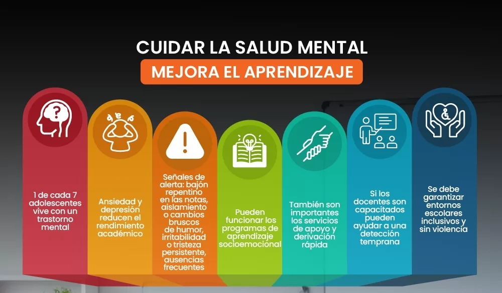

Principales Factores de Riesgo
Principales Factores de Riesgo
- Presión académica: Sobrecarga de materias, temor al fracaso, exigencia extrema y la incertidumbre sobre el futuro laboral.
- Hábitos de vida desbalanceados: Privación de sueño, mala alimentación y falta de actividad física.
- Transiciones y rupturas: Cambios de nivel educativo (ingreso a la universidad), problemas en las relaciones interpersonales o duelos emocionales.

Factores clave que influyen en el bienestar
- Entorno escolar y social: La convivencia positiva, el compañerismo y la ausencia de acoso escolar fortalecen la resiliencia.
- Apoyo docente: Los maestros capacitados pueden detectar señales tempranas de angustia emocional y ofrecer un espacio seguro.
- Entorno familiar: El respaldo en casa, la comunicación abierta y la reducción de la sobrecarga de expectativas son determinantes.
- Hábitos físicos: El descanso adecuado (dormir menos de 8 horas es un factor de riesgo común) y la actividad física regular influyen directamente en el estado de ánimo.